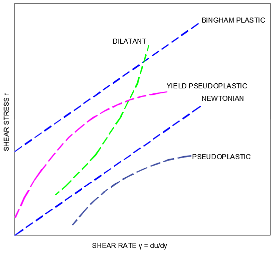

Non-Newtonian fluid is one that does not obey Newton's viscosity law, which states that viscosity should remain constant regardless of stress. Unlike Newtonian fluid, when forced, the viscosity and fluid flow of non-Newtonian fluids can change from liquid to solid. Ketchup, for example, is a non-Newtonian fluid because it becomes runnier when shaken.
Types of non Newtonian Fluids
Thixotropic:
Viscosity decreases with stress over time
Example: Honey – keep stirring, and solid honey becomes liquid
Rheopectic:
Viscosity increases with stress over time
Example: Cream – the longer you whip it the thicker it gets.
Shear thinning:
Viscosity decreases with increased stress
Example: Tomato sauce
Dilatant or shear thickening:
Viscosity increases with increased stress
Example: Oobleck
Understanding the behavior of non-Newtonian fluids has important applications: Prevent disasters - planning the place to construct a house or building depending on the soil of the terrain Safety - creating body vest / armours that behave like non-Newtonian fluids for Police or Military uses Medicine - understand more about our body and improve health tecniques
